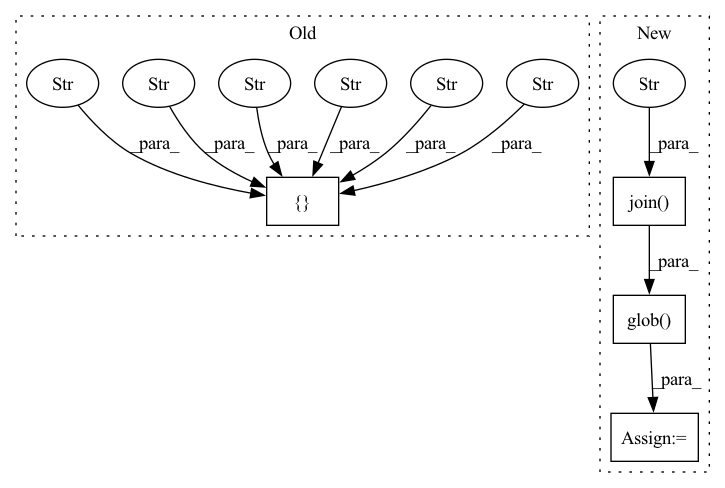

Pattern ID :36141
Before Change
descriptions = _create_file_index(path)
// order descriptions chronologically
descriptions.sort_values(
["year" , "month" , "day" , "subject" , "session" , "segment" ],
axis=1, inplace=True)
// https://stackoverflow.com/questions/42284617/reset-column-index-pandas
descriptions = descriptions.T.reset_index(drop=True).TAfter Change
preload=False, add_physician_reports=False):
// create an index of all files and gather easily accessible info
// without actually touching the files
file_paths = glob.glob(os.path.join( path, "**/*.edf" ) , recursive=True)
descriptions = _create_chronological_description(file_paths)
// limit to specified recording ids before doing slow stuff
if recording_ids is not None:
descriptions = descriptions[recording_ids]In pattern: SUPERPATTERN
Frequency: 3
Non-data size: 4
Instances Fragment ID: 102490123
Project Name: braindecode/braindecode
Commit Name: c691553f5ad11269416dbc476e612e82b6309300
Time: 2021-04-27
Author: lukas.gemein@gmx.de
File Name: braindecode/datasets/tuh.py
M Class Name: TUH
N Class Name: TUH
M Method Name: __init__(6)
N Method Name: __init__(6)
M Parent Class: BaseConcatDataset
N Parent Class: BaseConcatDataset
M File Name: braindecode/datasets/tuh.py
N File Name: braindecode/datasets/tuh.py
M Start Line: 47
M End Line: 53
N Start Line: 47
N End Line: 48
Before Change
descriptions = _create_file_index(path)
// order descriptions chronologically
descriptions.sort_values(
["year" , "month" , "day" , "subject" , "session" , "segment" ],
axis=1, inplace=True)
// https://stackoverflow.com/questions/42284617/reset-column-index-pandas
descriptions = descriptions.T.reset_index(drop=True).TAfter Change
preload=False, add_physician_reports=False):
// create an index of all files and gather easily accessible info
// without actually touching the files
file_paths = glob.glob(os.path.join( path, "**/*.edf" ) , recursive=True)
descriptions = _create_chronological_description(file_paths)
// limit to specified recording ids before doing slow stuff
if recording_ids is not None:
descriptions = descriptions[recording_ids] Fragment ID: 102490120
Project Name: braindecode/braindecode
Commit Name: 04b8fa373aa8c4db1f48d90015e4b1e413a6f223
Time: 2021-02-02
Author: lukas.gemein@gmx.de
File Name: braindecode/datasets/tuh.py
M Class Name: TUH
N Class Name: TUH
M Method Name: __init__(6)
N Method Name: __init__(6)
M Parent Class: BaseConcatDataset
N Parent Class: BaseConcatDataset
M File Name: braindecode/datasets/tuh.py
N File Name: braindecode/datasets/tuh.py
M Start Line: 47
M End Line: 53
N Start Line: 47
N End Line: 48
Before Change
this_dir = os.path.dirname(os.path.abspath(__file__))
extensions_dir = os.path.join(this_dir, "DCLS/src")
ext_list = ["dcls_1d" ,
"dcls_2_1d" ,
"dcls_2d" ,
"dcls_3_1d" ,
"dcls_3_2d" ,
"dcls_3d" ,
"dcls",
"im2col_dcls"After Change
extension = CUDAExtension
define_macros = [("WITH_CUDA", None)]
ext_modules = list([
extension(
ext_name,
glob.glob(os.path.join(extensions_dir_construct, ext_name + ".cpp")) + glob.glob(os.path.join( extensions_dir_construct, "cuda" , ext_name + "_cuda_kernel.cu") ) ,
define_macros=define_macros,
extra_compile_args=extra_compile_args,
libraries=[ "cusparse"] Fragment ID: 102490115
Project Name: k-h-ismail/dilated-convolution-with-learnable-spacings-pytorch
Commit Name: 1c44ddb48f45ba7aff9c9bbd3a31ca15b0b0aa6c
Time: 2021-10-12
Author: khalfaoui.ismail@hotmail.com
File Name: setup.py
M Class Name: AnonimousClass
N Class Name: AnonimousClass
M Method Name: get_extensions(0)
N Method Name: get_extensions(0)
M Parent Class:
N Parent Class:
M File Name: setup.py
N File Name: setup.py
M Start Line: 24
M End Line: 48
N Start Line: 21
N End Line: 58